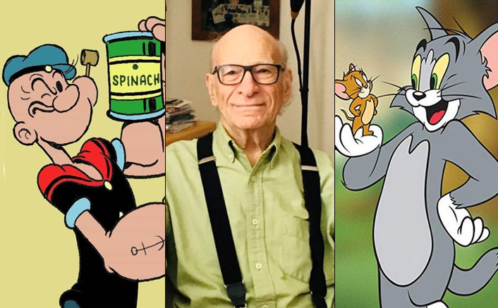

Eugene Merril Deitch (August 8, 1924 – April 16, 2020) was an American illustrator, animator, comics artist, and film director.
History of Gene Deitch in Timeline
1924 - Deitch was born in Chicago on August 8, 1924, the son of salesman Joseph Deitch and Ruth Delson Deitch. In 1929, the family moved to California, and Deitch attended school in Hollywood. He graduated from Los Angeles High School in 1942
1943 - Deitch met his first wife, Marie, when they both worked at North American Aviation, and they married in 1943. Their three sons, Kim, Simon, and Seth Deitch, are artists and writers for underground comix and alternative comics.
1955 - Deitch took an apprenticeship at the animation studio United Productions of America (UPA), and later became the creative director of Terrytoons, creating such characters as Sidney the Elephant, Gaston Le Crayon, Tom Terrific, and Clint Clobber. Beginning in 1955, while working at UPA, Deitch wrote and drew the United Feature Syndicate comic strip The Real-Great Adventures of Terr’ble Thompson!, Hero of History, starring a courageous child in fantastical adventures.
1966 - With producer William L. Snyder, Deitch co-produced and directed a series of TV shorts of Krazy Kat for King Features from 1962 to 1964. The Bluffers, which was based on one of Deitch's ideas, was also co-produced by him. He directed the 1966 film Alice of Wonderland in Paris. In 1966, he worked with Czech animator Jiří Trnka on a feature-length animated film adaptation of The Hobbit.
1969 - From 1969 until his retirement in 2008, Deitch was the leading animation director for the Connecticut organization Weston Woods Studios, adapting children's picture books. Deitch adapted 37 films for Weston Woods, from Drummer Hoff in 1969 to Voyage to the Bunny Planet in 2008. His studio was located in Prague near the Barrandov Studios, where many major films were shot.
2003 - Deitch was awarded the Annie Awards' Winsor McCay Award by ASIFA-Hollywood for a lifetime contribution to the art of animation.
2020 - Deitch died in Prague on April 16, 2020, at the age of 95. Shortly before his death, Deitch had noted intestinal problems.
He is the person who made our childhood great by directing Tom & Jerry and Popeye. Do read more about him here